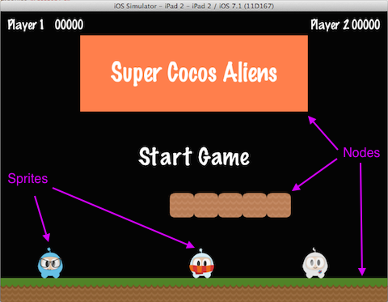
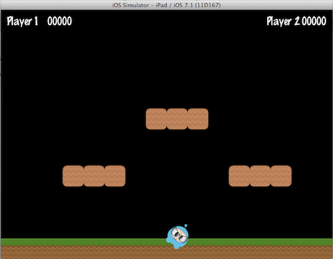
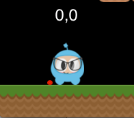

精灵(Sprite)
不知你是否意识到，所有的游戏都有 精灵(Sprite) 对象，精灵是您在屏幕上移动的对象，它能被控制。你喜欢玩的游戏中主角可能就是一个精灵，我知道你在想是不是每个图形对象都是一个精灵，不是的，为什么? 如果你能控制它，它才是一个精灵，如果无法控制，那就只是一个节点(Node)。
看下面的图片，我们来指出一下，哪个是精灵(Sprite)，哪个是节点(Node)。

精灵在所有游戏中都很重要，每个游戏都有这样的情景：一个舞台，上面站着一个某种形式的主角，那主角就是精灵。Sprite 很容易被创建，它有一些可以被配置的属性，比如：位置，旋转角度，缩放比例，透明度，颜色 等等。
// This is how to create a sprite
auto mySprite = Sprite::create("mysprite.png");
// this is how to change the properties of the sprite
mySprite->setPosition(Vec2(500, 0));
mySprite->setRotation(40);
mySprite->setScale(2.0); // sets both the scale of the X and Y axis uniformly
mySprite->setAnchorPoint(Vec2(0, 0));
让我们举例说明每个属性的含义，思考下面不同截图中精灵的区别：

设置位置 mySprite->setPosition(Vec2(500, 0));：

现在这个精灵的位置就变成了，我们设置的新地方。
设置旋转角度 mySprite->setRotation(40);：

可以发现这个精灵已经被旋转了设置的角度
设置缩放比例 mySprite->setScale(2.0);：

看到了精灵的大小，由于我们设置缩放而变化了。
我们再来说一下 锚点(anchor point) ，所有的节点(Node)对象都有锚点值，Sprite 是 Node 的子类，自然也具有锚点。锚点是节点对象在计算坐标位置时的一个基准点。
以我们刚才的展示的精灵为例，设置锚点(0,0)：
mySprite->setAnchorPoint(Vec2(0, 0));
精灵的左下角就变为了 setPosition() 调用，计算坐标的基础。再看看其它的锚点效果：
 


注意每张图片中的红点，红点表示锚点的位置。
正如你所看到的那样，锚点对于确定节点对象的位置是非常有用的，你可以在你的游戏中动态的调整锚点值以实现你想要的效果。
现在我们可以静态调整精灵的各个方面，但是你要想这些属性按照时间自动变化该如何做呢? 继续阅读，很快你就会有答案。